stageA_batch_layout_bitwise_identity_by_computation_bar.png Stage A: which computation depends on the batch layout. Bars = fraction of (material, start) units whose decoded parameters, lane responses, group terms, objective and gradient are bitwise identical to the 8-start (72-unit) layout. Only the gradient depends on the batch shape (36 or 9 units); content and order changes at fixed shape 72 change nothing.
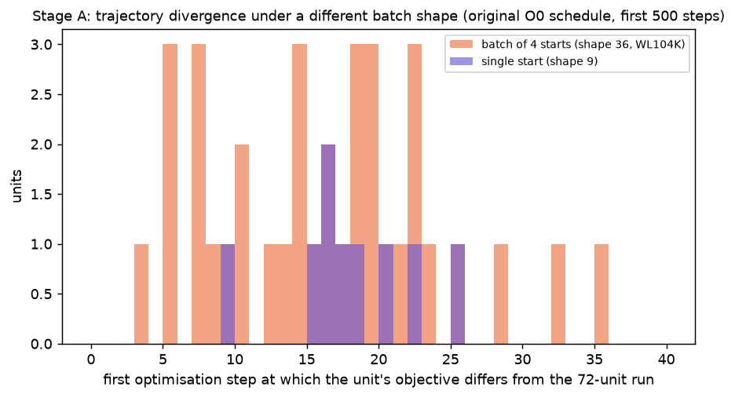
stageA_batch_shape_first_divergence_step_histogram.png Stage A: step at which each unit's per-step training objective first differs from the 8-start run when the batch holds 4 starts (WL104K) or 1 start. Same code, data, starts and learning-rate schedule.
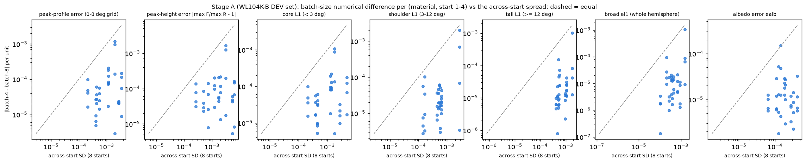
stageA_dev_batch4_vs_batch8_difference_vs_across_start_sd_scatter.png Stage A: numerical batch-size sensitivity (|metric(R4) - metric(R8)|, mean over the 20 DEV probes) per (material, start 1-4) against the across-start SD of the same metric (8 starts) per material. Points near the dashed line mean the batch size alone moves a unit about as much as changing the random start.
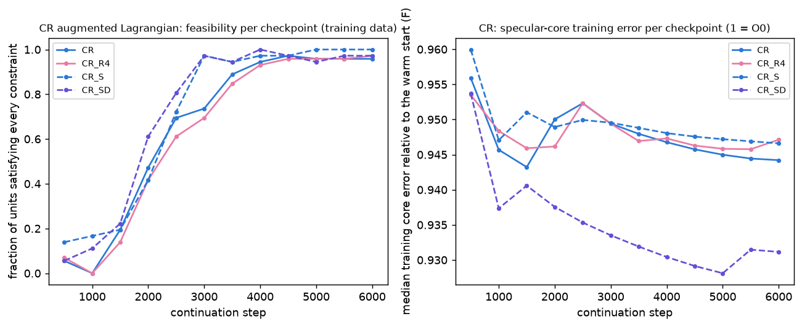
training_CR_feasibility_and_core_error_by_checkpoint_line.png CR training (train_original; synthetic arms on their noisy targets): fraction of units whose per-probe el1 / albedo / shoulder / tail constraints all hold within 0.1 % (left) and median core-error ratio F to the warm start (right) at every 500-step checkpoint. The returned state is the best feasible checkpoint (or the warm start).
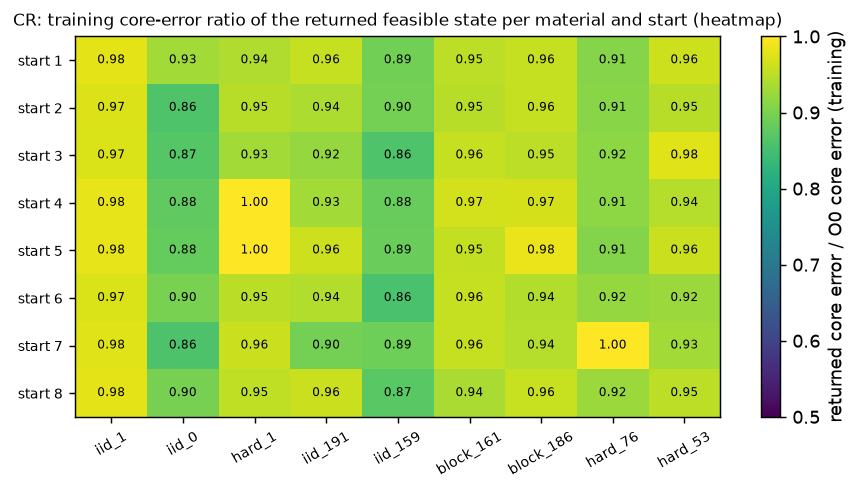
training_CR_returned_core_error_ratio_per_material_start_heatmap.png CR: per (material, start) ratio of the returned state's training core error (< 3 deg) to the O0 warm start, all constraints satisfied. 1.00 = no feasible improvement found (warm start returned).
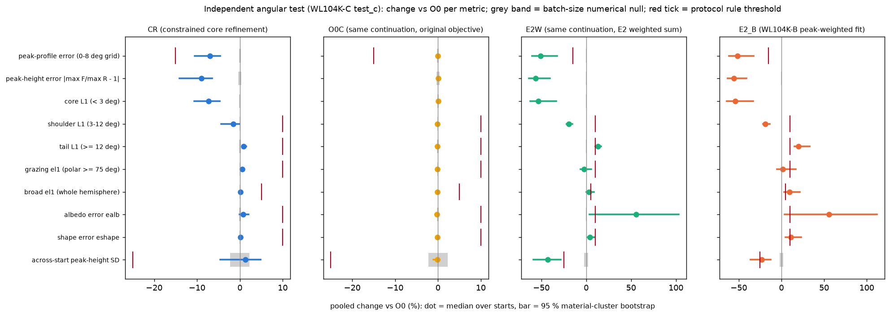
test_c_pooled_change_vs_O0_per_metric_CR_O0C_E2W_E2B_dotplot.png Independent test_c: paired-start pooled relative change vs O0 (dot = median over 8 starts, bar = 95 % material-cluster bootstrap) for peak / core / shoulder / tail / grazing / broad el1 / albedo / shape and across-start instability. Grey band = batch-size numerical null; red tick = PEAK_GAIN (-15 %), STABILITY_GAIN (-25 %) or BROAD_PRESERVED limits.
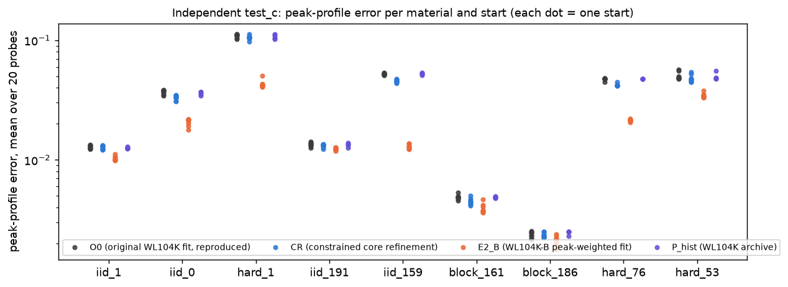
test_c_e_prof_per_material_per_start_O0_CR_E2B_Phist_dots.png Independent test_c: peak-profile error (mean over the 20 probes) for every material and start; O0, CR, E2_B 8 starts, P_hist 4.
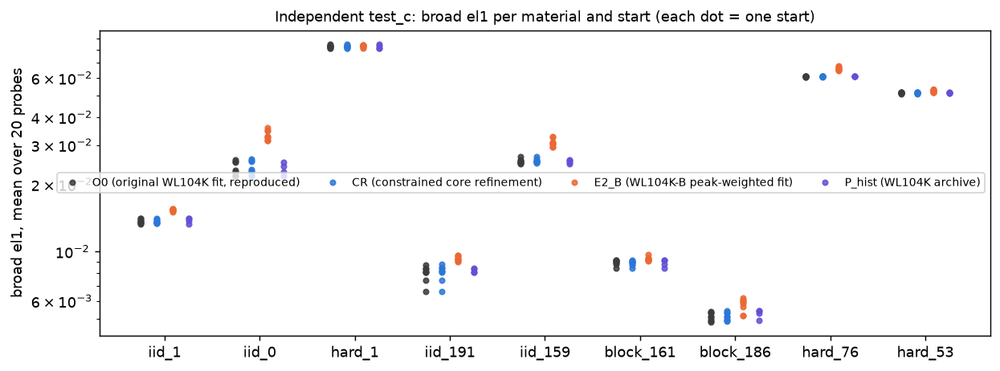
test_c_el1_per_material_per_start_O0_CR_E2B_Phist_dots.png Independent test_c: broad el1 (mean over the 20 probes) for every material and start; O0, CR, E2_B 8 starts, P_hist 4.
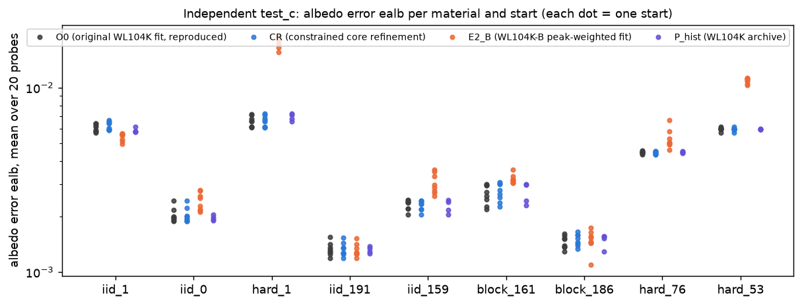
test_c_ealb_per_material_per_start_O0_CR_E2B_Phist_dots.png Independent test_c: albedo error ealb (mean over the 20 probes) for every material and start; O0, CR, E2_B 8 starts, P_hist 4.
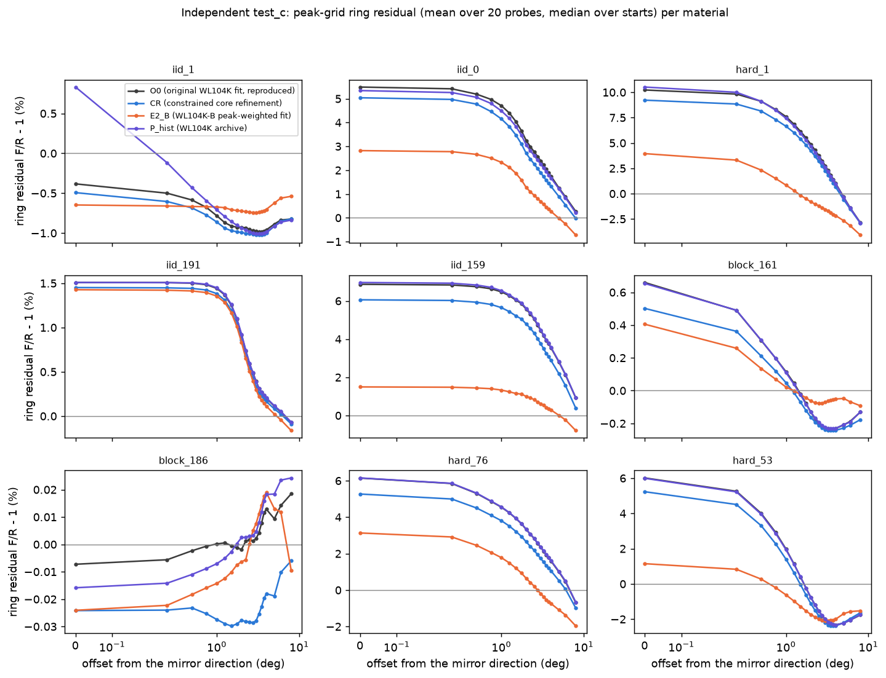
test_c_peak_ring_residual_profile_per_material_O0_CR_E2B_Phist_line.png Independent test_c peak grid: per ring (0-8 deg from the mirror direction) mean prediction / mean reference - 1, averaged over the 20 probes and the median over starts. Positive = overshoot.
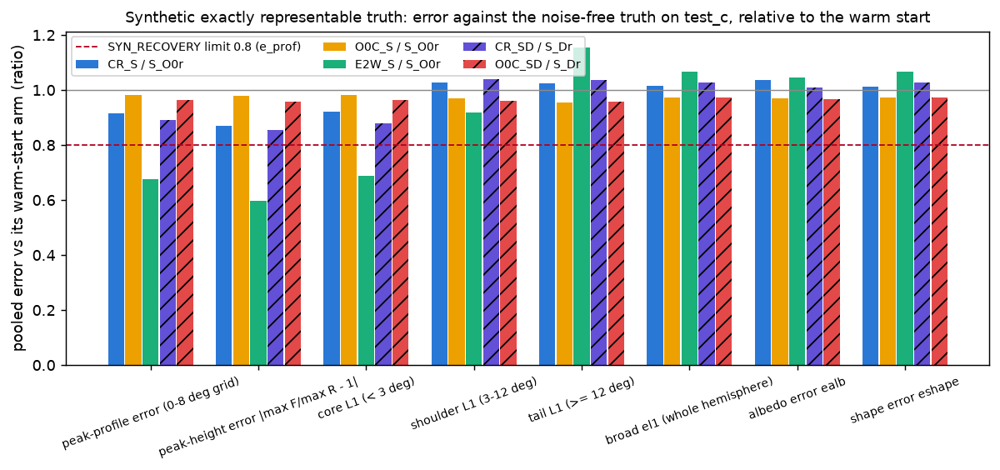
synthetic_truth_recovery_ratio_vs_warm_start_bar.png Synthetic controls (truth exactly representable): pooled test_c error against the noise-free truth of each continuation arm divided by its warm start (S_O0r for *_S on train_original lanes, S_Dr for *_SD on the denser train_coverage lanes).
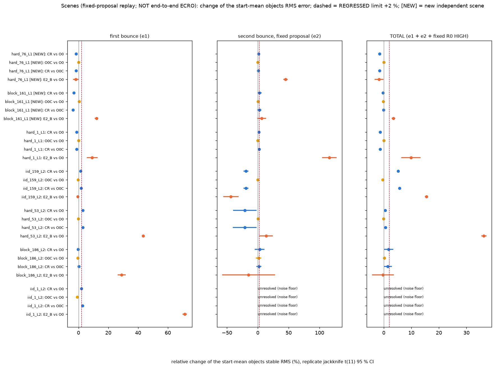
scenes_objects_rms_change_e1_e2_total_all_scenes_dotplot.png Every scene: relative change of the start-mean objects stable RMS error (noise-debiased) with replicate jackknife t(11) 95 % CI for CR vs O0, O0C vs O0, CR vs O0C and E2_B vs O0, per event. IMPROVED = upper bound < 0; REGRESSED = lower bound > +2 %.scenes_e1_absolute_error_maps_O0_CR_E2B_shared_scale.png Absolute HDR luminance error maps of the e1 event (start-mean images) for O0, CR and E2_B in every scene, all on one absolute scale (max 0.782) with sqrt mapping; the reference image is shown on its own scale for orientation.
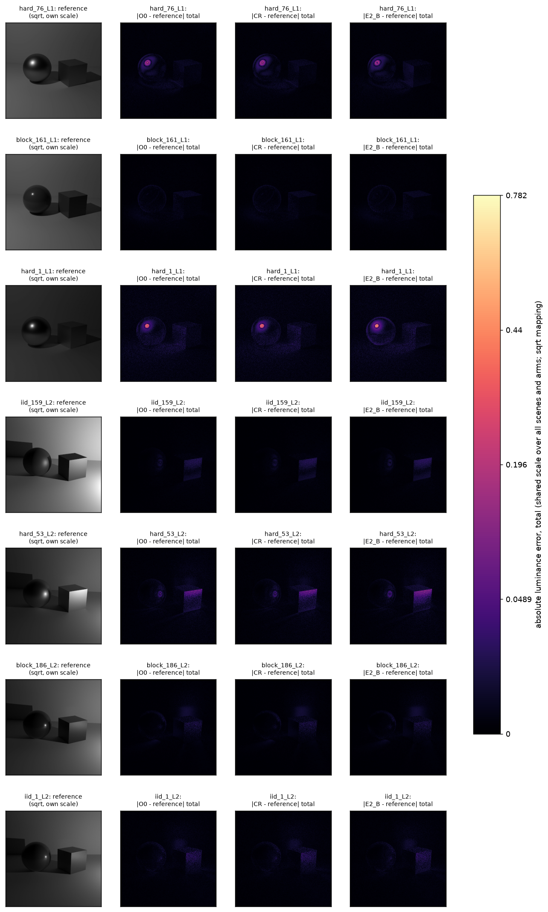
scenes_total_absolute_error_maps_O0_CR_E2B_shared_scale.png Absolute HDR luminance error maps of the total event (start-mean images) for O0, CR and E2_B in every scene, all on one absolute scale (max 0.782) with sqrt mapping; the reference image is shown on its own scale for orientation.
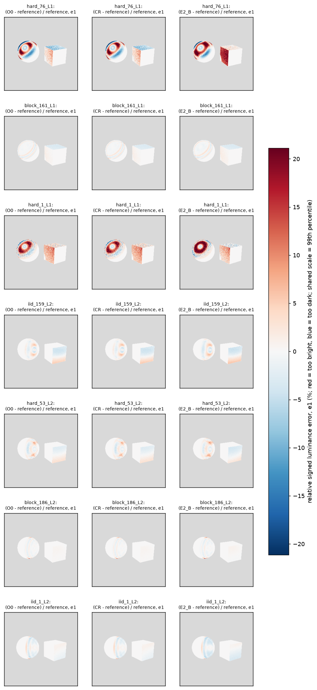
scenes_e1_relative_signed_error_maps_O0_CR_E2B_shared_scale.png Relative signed HDR luminance error (X - reference) / reference of the e1 event (start-mean images) on the objects mask (grey = background, not evaluated) for O0, CR and E2_B; one symmetric shared scale +/-21.1 % (99th percentile over all scenes and arms; larger values saturate); reference floored at 1 % of its objects 99th percentile.
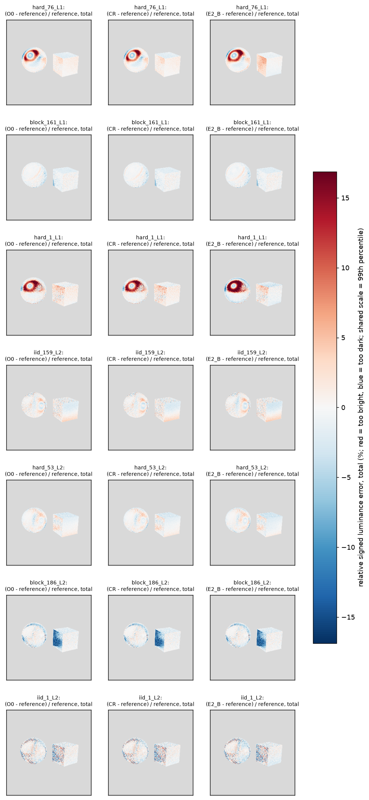
scenes_total_relative_signed_error_maps_O0_CR_E2B_shared_scale.png Relative signed HDR luminance error (X - reference) / reference of the total event (start-mean images) on the objects mask (grey = background, not evaluated) for O0, CR and E2_B; one symmetric shared scale +/-16.9 % (99th percentile over all scenes and arms; larger values saturate); reference floored at 1 % of its objects 99th percentile.